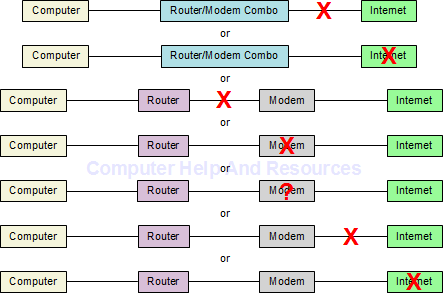

Version: Default* | Print Friendly With Images | Print Friendly Without Images
For: Windows XP (32) | Windows Vista (32/64) | Windows 7 (32/64)
Last Reviewed/Updated: 04 Apr 2011 | Published: 08 Dec 2010 | Status: Active
The Windows XP, Windows Vista, and Windows 7 (Windows XP/Vista/7) notification area Network icon provides network status and diagnostic information through icon overlays and icon mouseover infotips. This Web page describes how to diagnose network connection issues by interpreting the Windows XP/Vista/7 notification area Network icon.
2. Fully Enable The Windows XP/Vista Notification Area Network Icon
By default, the Windows 7 notification area Network icon is fully enabled and the Windows XP/Vista notification area Network icon is not fully enabled.
2.1. Fully Enable The Windows XP Notification Area Network Icon
By default, the Windows XP notification area Network icon is shown when the network has limited or no connectively, and is not shown when the network is connected. To show the Windows XP notification area Network icon when the network is connected:
2.2. Fully Enable The Windows Vista Notification Area Network Icon
Unlike Windows 7, the Windows XP/Vista notification area Network icon animates (i.e., the icon's monitors light up) when network activity occurs (i.e., the computer is sending/receiving network data). By default, the Windows Vista notification area Network icon activity animation is turned off. To turn on the Windows Vista notification area Network icon activity animation:
3. Diagnose Network Connection Issues By Interpreting The Windows XP Notification Area Network Icon
3.1. The Windows XP Notification Area Network Icon: Local Area Connection - A Network Cable Is Unplugged
This Network icon appears when the cabling between the computer and the network device is faulty or the network device is powered off:
3.2. The Windows XP Notification Area Network Icon: Local Area Connection - Status: Limited Or No Connectivity
This Network icon appears when the computer finds a network device and is unable to obtain an IP address. With a routerless (i.e., direct) network connection, this occurs when the modem needs to be powered off/on or reset, the connection between the modem and the Internet is faulty, or the Internet is down. With a router, this occurs when the router needs to be powered off/on or reset:
3.3. The Windows XP Notification Area Network Icon: Local Area Connection - Status: Connected
When the computer is sending/receiving network data the Network icon lights up:
This Network icon appears when the computer finds a network device and obtains an IP address:
4. Diagnose Network Connection Issues By Interpreting The Windows Vista Notification Area Network Icon
4.1. The Windows Vista Notification Area Network Icon: Not Connected - You Are Currently Not Connected To Any Networks
This Network icon appears when the cabling between the computer and the network device is faulty or the network device is powered off:
4.2. The Windows Vista Notification Area Network Icon: Currently Connected To: Unidentified Network - Access: Limited Connectivity
This Network icon appears when the computer finds a network device and is unable to obtain an IP address. With a routerless (i.e., direct) network connection, this occurs when the modem needs to be powered off/on or reset, the connection between the modem and the Internet is faulty, or the Internet is down. With a router, this occurs when the router needs to be powered off/on or reset:
4.3. The Windows Vista Notification Area Network Icon: Currently Connected To: Network - Access: Local Only
When the computer is sending/receiving network data the Network icon lights up:
This Network icon appears when the computer finds a network device, obtains an IP address, and is unable to connect to the Internet. This only occurs with a router and when something on the WAN (i.e., public) side of the router is not functioning, including when the cabling is faulty, the modem is powered off, the modem needs to be powered off/on or reset, or the Internet is down:

4.4. The Windows Vista Notification Area Network Icon: Currently Connected To: Network - Access: Local And Internet
When the computer is sending/receiving network data the Network icon lights up:
This Network icon appears when the computer finds a network device, obtains an IP address, and connects to the Internet:
5. Diagnose Network Connection Issues By Interpreting The Windows 7 Notification Area Network Icon
5.1. The Windows 7 Notification Area Network Icon: Not Connected - No Connections Are Available
This Network icon appears when the cabling between the computer and the network device is faulty or the network device is powered off:
5.2. The Windows 7 Notification Area Network Icon: Unidentified Network - No Network Access
This Network icon appears when the computer finds a network device and is unable to obtain an IP address. With a routerless (i.e., direct) network connection, this occurs when the modem needs to be powered off/on or reset, the connection between the modem and the Internet is faulty, or the Internet is down. With a router, this occurs when the router needs to be powered off/on or reset:
5.3. The Windows 7 Notification Area Network Icon: Network - No Internet Access
This Network icon appears when the computer finds a network device, obtains an IP address, and is unable to connect to the Internet. This only occurs with a router and when something on the WAN (i.e., public) side of the router is not functioning, including when the cabling is faulty, the modem is powered off, the modem needs to be powered off/on or reset, or the Internet is down:
5.4. The Windows 7 Notification Area Network Icon: Network - Internet Access
This Network icon appears when the computer finds a network device, obtains an IP address, and connects to the Internet: